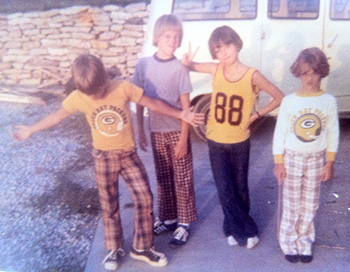
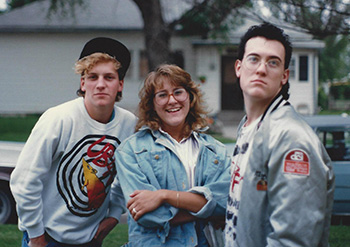
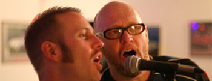
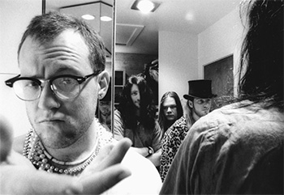

Time to learn a bit more about this man. Let me introduce a super old friend, Mark Wolford. I've know this person from the wee age of 4 years old. Although at some points in our life we have moved away from each other, but when it comes right down to it we've been friends forever. And it feels like that sometimes.
Growing up in a small town: Mark grew up in Missouri Valley, IA just a bit outside of town with 5 siblings. His father was retired from the railroad & his mother worked in the same office as my mother. Somewhat, this is where we became friends, because we had to. We both enjoyed exploring for hours out & around either of our homes, country living. We went movies as kids & sometimes Mark would pay for the movie with a bag of pennies which always perplexed me.
School years - not quite fitting in. Mark was a gifted musician & could play just about any instrument. He really never quite fit in. His sense of humor was the only thing that kept him from being pulverized by bullies. He & I somewhat distanced ourselves from each other - he got way into music & I got into chasing girls. High school days we were kind of on & off friends, but always hung out at particular times.
Just after high school. This was kind of a confusing time for my old pal Mark. He tried super hard to be in a cover band with one of his older brothers - the band was gearing up to start playing on cruise ships. Alas, that wasn't in the cards... he soon moved home for a bit & started community college & this is where we really started to bond. I had my own acoustic jam night & he wanted to join in on the drums & I said of course! We had a rough go of it & he decided to go to Iowa for college - that also didn't last long, as we had really began to get the band working on regular gigs around Omaha.
Its's the band, man: Well, now Mark was back in Omaha & we became roommates & ready to start playing in the band & trying to make it happen. He is/was a very funny weirdo that was into physical comedy. This played very well to the style of music the band played which was one half rock & one half improv theatre. The band continued for just about 3yrs, but alas - he was getting anxious & wanted to do something different. So, he picked up & went to Seattle.
 Seattle & Marriage, who would have guessed?: Mark kicked around Seattle for nearly 25yrs - playing as a session drummer for the most part. But, he was talented enough that he was able to play a few intruments & made a go at it with many bands. He finally got tired of the city & moved out to a small eastern Washington state town. On a trip to Canada, he met his future wife Petra. Wow, I have to say - there couldn't be a couple more made for each other - they are both very odd folks.
Seattle & Marriage, who would have guessed?: Mark kicked around Seattle for nearly 25yrs - playing as a session drummer for the most part. But, he was talented enough that he was able to play a few intruments & made a go at it with many bands. He finally got tired of the city & moved out to a small eastern Washington state town. On a trip to Canada, he met his future wife Petra. Wow, I have to say - there couldn't be a couple more made for each other - they are both very odd folks.